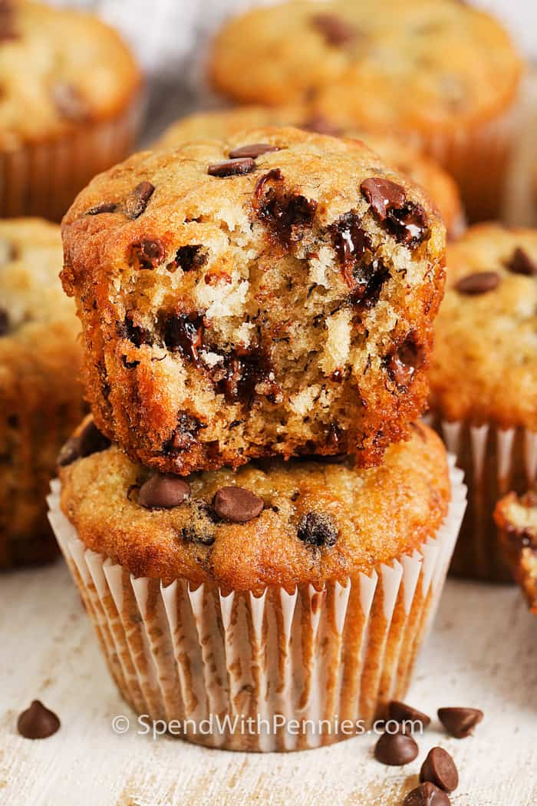

My Favorite Recipe
Banana Chocolate Chip Muffins
Ingredients
- 1.5 cups flour
- 3/4 cups sugar
- 1 cup mashed bananas
- 1 egg
- 1/2 cup vegetable oil
- 1 cup chocolate chips
Instructions
- Preheat oven to 375°F. Line a muffin pan with paper liners.
- Combine flour, baking soda, and salt in a small bowl. Stir in chocolate chips.
- Combine sugar, bananas, egg, oil, and vanilla in a medium bowl. Add dry ingredients.
- Pour into prepared muffin tin and bake 18-20 minutes or until a toothpick comes out clean. Do not overbake.